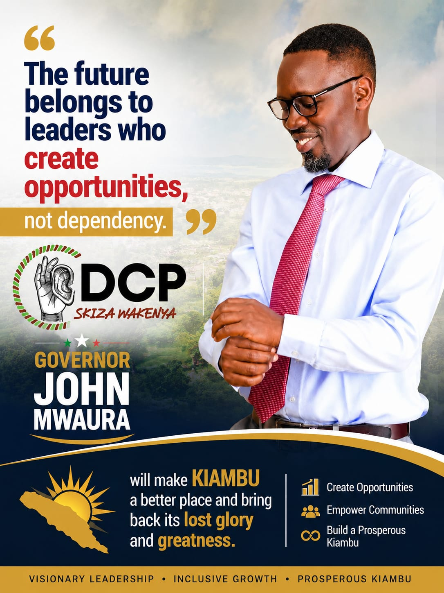

Latest updates, rallies, and announcements from the John Mwaura's campaign

Campaign UpdateJanuary 15, 2027
In front of thousands of supporters at the county grounds, John Kiongozi officially declared his candidacy for Governor, unveiling his bold 4-pillar manifesto and pledging to transform the county within his first term.
Read MoreJanuary 20, 2027
Over 8,000 supporters attended the Eastlands rally where Kiongozi outlined his youth jobs plan in detail.
Read More →January 25, 2027
The largest farmers lobby in the county officially threw their support behind the Kiongozi campaign citing his agricultural agenda.
Read More →February 1, 2027
In a detailed statement, the campaign addressed claims made by the current administration about road development and healthcare funding.
Read More →February 10, 2027
Kiongozi will host a live town hall exclusively for youth voters. Submit your questions in advance through our website.
Read More →February 14, 2027
The campaign hit a major milestone as the 10,000th supporter registered on the official website — a sign of the growing movement.
Read More →February 18, 2027
John Kiongozi sat down with Nation Media Group for an in-depth interview on his vision for the county's economic future.
Read More →